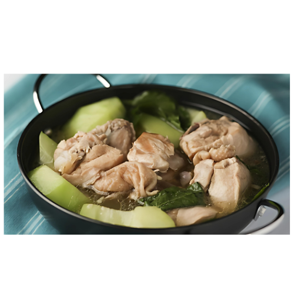

Tinolang Manok
Tinolang Manok is a traditional Filipino chicken soup known for its light and aromatic broth, making it a comforting and nourishing dish. The term "tinola" refers to the cooking method of simmering, while "manok" means chicken in Filipino. This dish typically features tender chicken pieces simmered in a savory broth infused with ginger, garlic, and onions, creating a warm and fragrant base.
What sets Tinolang Manok apart is the addition of fresh vegetables, most commonly green papaya or chayote, and leafy greens such as malunggay (moringa leaves) or spinach, which add texture, color, and nutritional value. The ginger gives the soup a warm spiciness, while the vegetables provide a subtle sweetness.
Tinolang Manok is often enjoyed with steamed rice, allowing diners to savor the flavorful broth. It is a popular comfort food in Filipino households, often prepared during family gatherings or served to those who are feeling under the weather, as it is believed to have soothing and restorative qualities. Overall, this dish exemplifies the balance of flavors and ingredients that characterize Filipino cuisine.
Origin
Tinolang Manok has its roots in Filipino culinary tradition, where it reflects the influences of local ingredients and cooking practices. The dish is particularly popular in the Philippines, often associated with home-cooked meals and family gatherings. The word "tinola" comes from the Filipino term "tinola," which means to boil or to simmer, highlighting the cooking method used in preparing the dish.
Historically, Tinola can be traced back to the rural regions of the Philippines, where chicken was often raised in households, making it a readily available source of protein. The use of ginger, garlic, and onions in the broth showcases the Filipino preference for aromatic flavors, while the addition of local vegetables like green papaya, chayote, and malunggay (moringa leaves) emphasizes the country's agricultural bounty.
Tinolang Manok is not only a staple in Filipino cuisine but also reflects the cultural significance of communal meals and hospitality. It is commonly served during special occasions, family gatherings, and as a comforting dish for those feeling unwell. The dish’s versatility allows for regional variations, with different provinces adding their unique twists while maintaining the core essence of this beloved comfort food.
Ingredients
- 1 kg (about 2.2 lbs) chicken, cut into serving pieces (preferably bone-in, skin-on)
- 1 medium onion, sliced
- 4-5 cloves garlic, minced
- 1 thumb-sized piece of ginger, sliced or julienned
- 1-2 tbsp fish sauce (patis) or to taste
- 6 cups water or chicken broth
- 1 medium green papaya or sayote, peeled and sliced into wedges
- 1-2 cups fresh malunggay (moringa leaves) or spinach
- Salt and pepper to taste
- 2-3 green chili peppers (optional, for added spice)
How to Cook
- In a large pot, heat a tablespoon of oil over medium heat.
- Add the sliced onions and sauté until they are translucent.
- Add the minced garlic and ginger, cooking until fragrant, about 1-2 minutes.
- Add the chicken pieces to the pot and sauté until they are lightly browned on all sides, about 5-7 minutes.
- Pour in the fish sauce and cook for another minute, stirring to coat the chicken.
- Pour in the water or chicken broth, bringing the mixture to a boil.
- Once boiling, reduce the heat to low and cover the pot. Let it simmer for about 30 minutes, or until the chicken is tender.
- After the chicken is tender, add the sliced green papaya or sayote and the green chili peppers (if using).
- Continue to simmer for another 10-15 minutes, or until the vegetables are cooked but still crisp.
- Stir in the malunggay or spinach leaves and cook for an additional 2-3 minutes, just until the leaves are wilted.
- Taste and adjust the seasoning with salt and pepper as needed.
- Once done, remove from heat and ladle the soup into bowls. Serve hot with steamed rice.